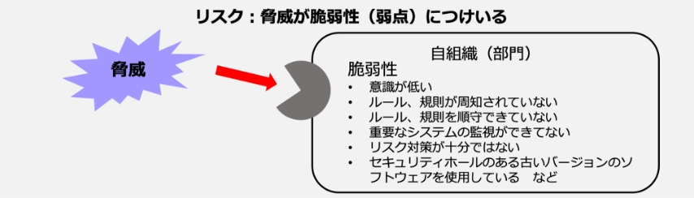

10-1-2. 脅威の識別
脅威の識別
脅威は「脆弱性」につけいり顕在化することで、組織に損失や損害を与える事故を生じさせます。脅威を、人為的脅威（意図的脅威、偶発的脅威）と環境的脅威に区別して把握することで、必要なセキュリティ対策を整理しやすくなります。
図45. 脅威の分類と、被害例と対策
（出典）MSQA「ISMS推進マニュアル活用ガイドブック 2022年 1.0版」を基に作成
類型
脅威
原因
物理的損傷
火災、水害、汚染、大事故、機器や媒体の破壊、粉塵、腐食、凍結
A/D/E
自然現象
気候、地震、火山活動、気象現象、洪水
E
重要なサービスの喪失
空調や給水システムの故障/電気通信機器の故障
A/D
電力供給の停止
A/D/E
情報を危うくすること
遠隔スパイ行為、盗聴、媒体や文章の盗難、機器の盗難、再利用又は廃棄した媒体からの復元、ハードウェアの改ざん、位置検知
D
漏洩・信頼できない情報源からのデータ・ソフトウェアの改ざん
A/D
技術的な故障
機器の故障、機器の誤動作、ソフトウェアの誤作動
A
情報システムの飽和、情報システムの保守に関する違反
A/D
認可されていない行為
許可されていない機器の使用、ソフトウェアの不正コピー、データの破壊、データの違法な処理
D
海賊版又は（不正）コピーソフトウェアの使用
A/D
機能を危うくすること
使用時のミス
A
権限の乱用/権限の詐称
A/D
要員の可用性に関する違反
A/D/E
A：偶発的脅威（Accidental） D：意図的脅威（Deliberate） E：環境的脅威（Environmental）
脅威の一覧表の例
（出典）「ISO/IEC 27005」を基に作成
脅威を洗い出すには自組織にある資産に対する脅威を識別して、「脅威の一覧表の例」のようなリストを作成します。その際には、利用者や他の事業部の関係者、外部の専門家などから得られる、脅威に関する情報を活用することが大切です。
脅威の洗い出しの考え方として、意図的脅威は、攻撃の動機や必要なスキル、利用可能なリソースを考慮しつつ、資産の特性や魅力、脆弱性などから、どのような要因が脅威となるかを識別できます。一方で偶発的脅威は、環境や気候、人為的なミスや誤動作などから影響を及ぼす可能性を識別できます。
脅威の種類
想定される被害とセキュリティ対策
環境的脅威
(Environmental → E)
環境的脅威として地震や高潮がありますが、地震や高潮の発生そのものをコントロールすることはできません。従って、地震の発生可能性が低い場所を選択する、地震が発生した場合に素早く検知し、災害から回復する対策を重視する、などのセキュリティ対策が選択されることになります。
人為的脅威
意図的脅威
(Deliberate → D)
「（内部者が企業秘密を）漏洩する」という脅威が考えられます。この様な脅威については、当該行為が犯罪行為（不正競争防止法違反）であり、罰せられること、会社は企業規則により漏洩者を罰すること、場合によっては損害賠償請求を行うということを規程で明確に示し、教育を実施するという抑止的な対策が有効になります。漏洩を早期に検知するといった対策も重要になります。
偶発的脅威
(Accidental → A)
「入力ミス」がありますが、入力ミスが生じない様に、二回ずつ入力する、一定の範囲の値しか入力できない様にする、チェックデジットやチェックサムを設けるといった技術対策が有効となります。
脅威の分類と、被害例と対策
（出典）MSQA「ISMS推進マニュアル活用ガイドブック 2022年 1.0版」を基に作成